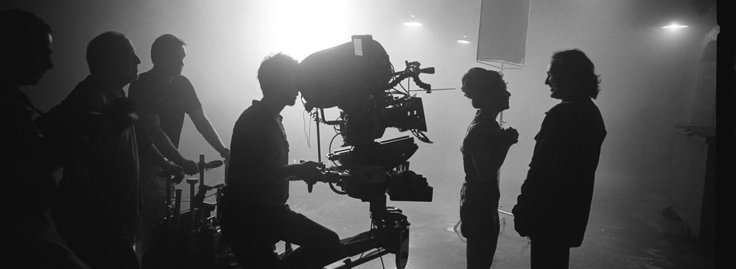
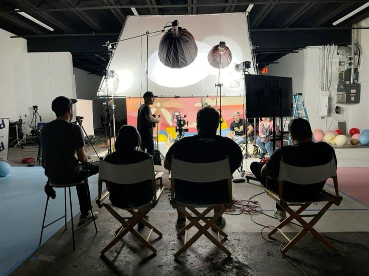

Зйомка відео — це процес фіксації динамічного зображення. Творчий процес вимагає повної віддачі, де важливо зловити справжню емоцію в кадрі та виставити правильну композицію.


Повернутися на початок сторінки зйомки